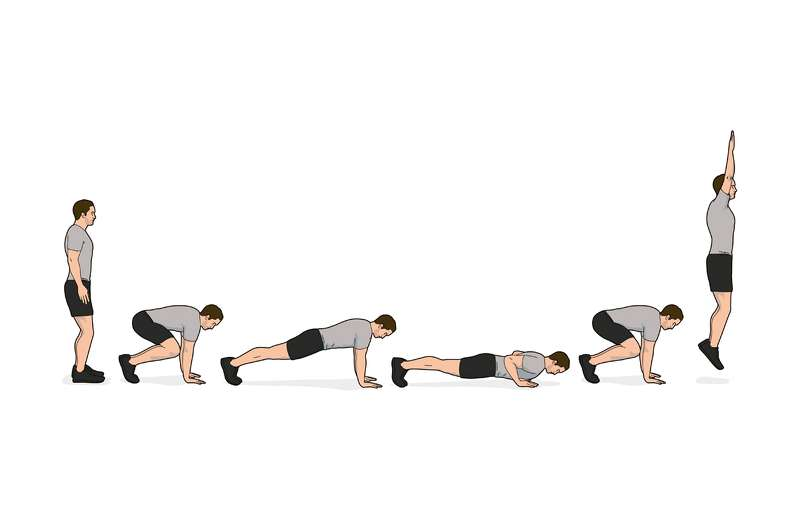
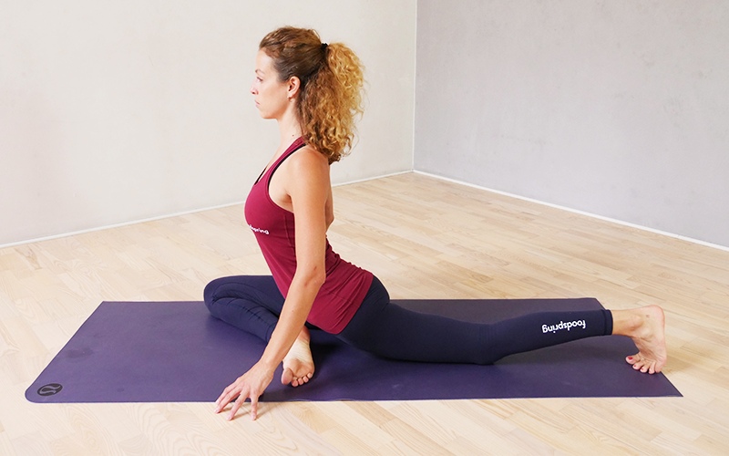
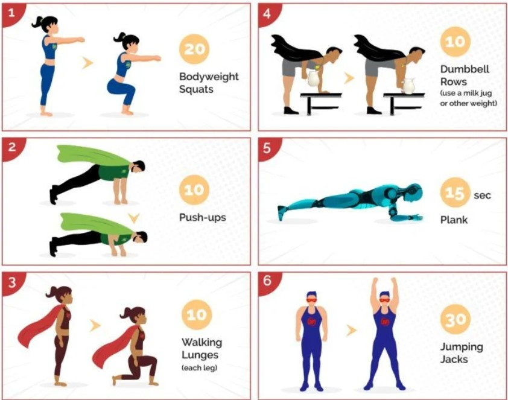

Einführung zu Crossfit
Crossfit ist eine Trainingsmethode die als HIIT gelten kann. Anders als herkömmliche Weise zu trainieren, setzt es auf variatät. Hauptziel ist es Fitnesskompetentzen aufzubauen. Insbesondere Stärke, Ausdauer, und Flexibilität sind von besonderem Interessen. Die Workouts setzten sich aus Übungen die in der Gymnastik, Gewichtsheben, Calisthenics, und HIIT. Weiterhin setzt Crossfit auch auf einem Community Aspekt. Training findet in Gruppen statt und Resultate werden online geteilt um sich gegenseitig zu ermutigen.
Was ist Crossfit
Um erfolgreich zu sein in einer Fitness-Journey, setzt Crossfit auf folgende Elemente in folgende Reihenfolge: Mentalität, Ernährung, Cardio, Gymnastik, und Gewichtsheben. Von besonderem Interesse ist dabei der Metcon (englisch für metabolic conditioning). In dieser Phase werden verschiedene Übungen in einer möglichst schnellen Folge durchgeführt. Der Vorteil dabei ist wenn eine Muskelgruppe ermüdet ist, wird sie durch eine andere abgelöst. Wie durch den Namen implziert, wird der Metabolismus maximal gefordert. Insbesondere die Energiespeicher, Phosphagensystem (was für besonders hohe aber sehr kurze Anstrengungen genutzt wird), Anaerobische System (auch für kurze Anstrengungen, welche aber aus 2-3 repetitionen bestehen), und das Oxidationsystem (lange Anstrengungen wie z.b länger joggen gehen). Den Inhalt des Metcon wird in einem Workout of the Day bekannt gegeben. Dieser kann unter anderem aus den Metcon, einem Stärke-, und einem Technikteil.
Übungen
Hier sind vier Beispiele von Übungen welche vielleicht vorkommen könnten.
- Clean and Jerkclick

- Burpees click
- Taubeposition click
- Circuit click
Sicherheit
Crossfit hat eine Menge Vorteile. Jedoch sind, insbesondere für Anfänger, einige Dinge zu beachten:
- Saubere Ausführung, vorallem beim Gewichtsheben
- Auf den Körper hören
- Gut ausgebildete Kursleiter